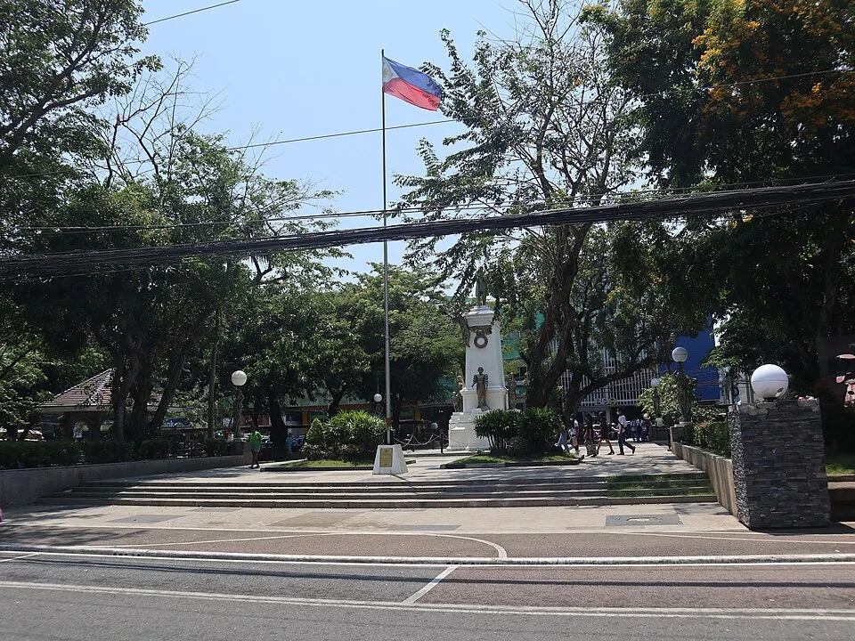
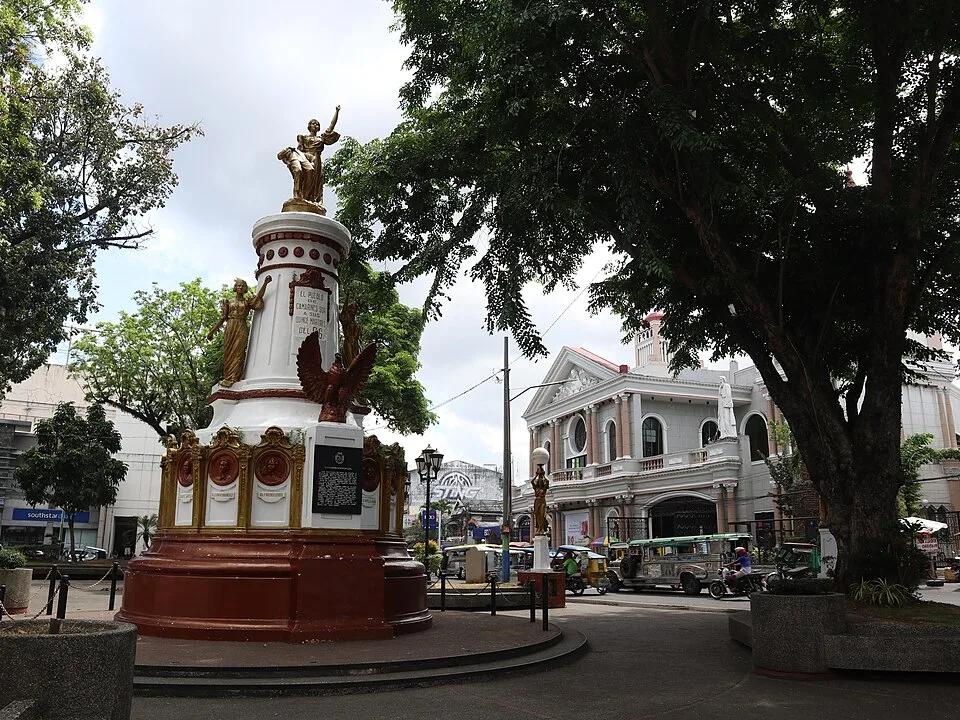
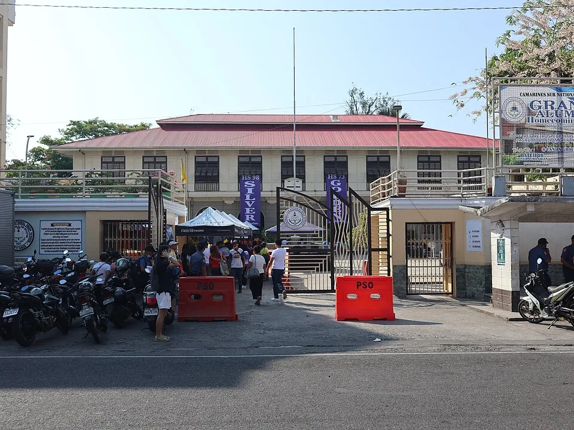
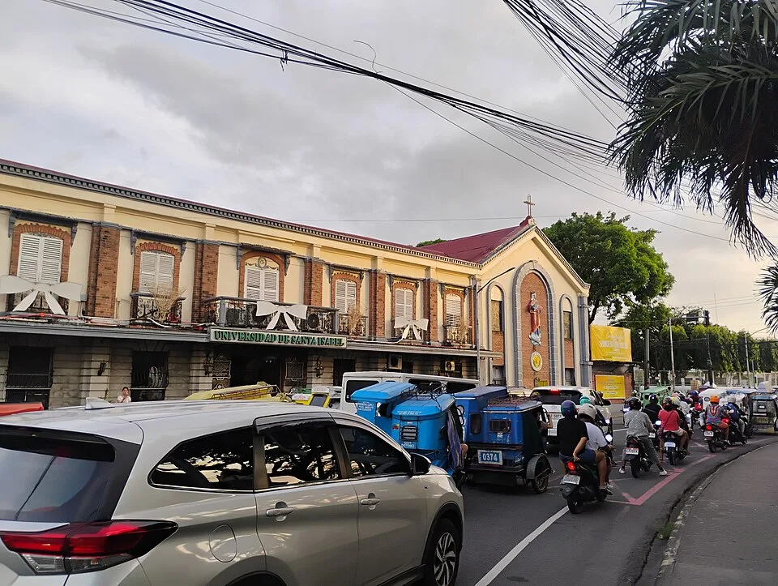
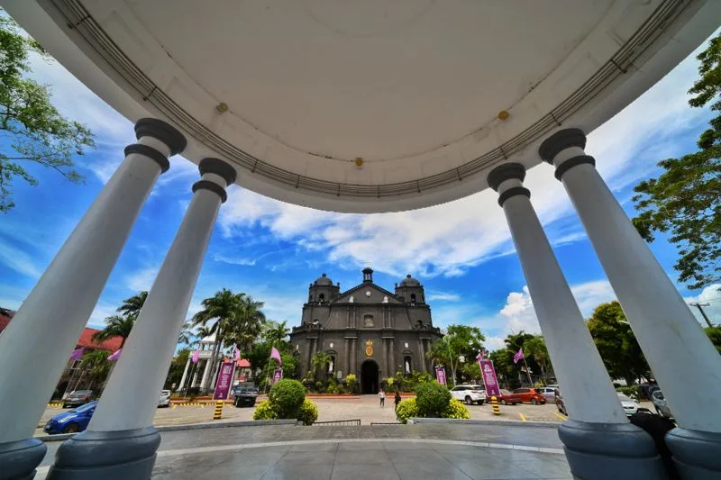

MYM-A-001 · Plaza Rizal

Landmark only; stop sign unverified.
Patrickroque01 · CC BY-SA 4.0 · 2023-04-15
Original photo. Resized/converted to WebP; cropped in this review.
.jpg){kind=link}
13.6233869, 123.1846726
Open coordinate for manual referenceAll source pins, including repeated landmarks. Photos are nearby landmark references only. No stop-sign photo is verified. Missing evidence remains explicit. Google Maps links are manual reference links; no Google imagery is copied.

Landmark only; stop sign unverified.
Patrickroque01 · CC BY-SA 4.0 · 2023-04-15
Original photo. Resized/converted to WebP; cropped in this review.
13.6233869, 123.1846726
Open coordinate for manual reference
Landmark only; stop sign unverified.
Patrickroque01 · CC BY-SA 4.0 · 2024-04-13
Original photo. Resized/converted to WebP; cropped in this review.
13.6244338, 123.1861778
Open coordinate for manual reference
Landmark only; stop sign unverified.
Patrickroque01 · CC BY-SA 4.0 · 2023-04-15
Original photo. Resized/converted to WebP; cropped in this review.
13.6298321, 123.190976
Open coordinate for manual reference13.6314651, 123.1927517
Open coordinate for manual reference13.6328896, 123.1942656
Open coordinate for manual reference13.6309839, 123.1970077
Open coordinate for manual reference13.6292228, 123.1985007
Open coordinate for manual reference13.6265116, 123.1990963
Open coordinate for manual reference13.6261192, 123.200876
Open coordinate for manual reference13.6277598, 123.1997995
Open coordinate for manual reference13.6185759, 123.1985904
Open coordinate for manual reference13.6176694, 123.1970291
Open coordinate for manual reference
Landmark only; stop sign unverified.
Ralff Nestor Nacor · CC BY-SA 4.0 · 2025-05-10 13:19:32
Original photo. Resized/converted to WebP; cropped in this review.
13.6157173, 123.1925205
Open coordinate for manual reference13.6162097, 123.1890293
Open coordinate for manual reference13.6165957, 123.1864136
Open coordinate for manual reference13.6185569, 123.183673
Open coordinate for manual reference13.621666, 123.1842716
Open coordinate for manual reference13.6189216, 123.1890866
Open coordinate for manual reference13.628149, 123.1978132
Open coordinate for manual reference13.6249841, 123.1995469
Open coordinate for manual reference13.623996, 123.2008868
Open coordinate for manual reference13.6204547, 123.2006852
Open coordinate for manual reference13.6166307, 123.1951644
Open coordinate for manual reference13.6160052, 123.1907468
Open coordinate for manual reference13.6166855, 123.1838985
Open coordinate for manual reference13.6179234, 123.1908514
Open coordinate for manual reference
Landmark only; stop sign unverified.
Ralff Nestor Nacor · CC BY-SA 4.0 · Taken on 14 December 2025, 17:02:26 (according to Exif data)
Original photo. Resized/converted to WebP; cropped in this review.
13.6276709, 123.1887035
Open coordinate for manual reference13.6173035, 123.1880936
Open coordinate for manual reference13.632102, 123.1958976
Open coordinate for manual reference13.6299067, 123.1979773
Open coordinate for manual referenceLandmark only; stop sign unverified.
Patrickroque01 · CC BY-SA 4.0 · 2024-04-13
Original photo. Resized/converted to WebP; cropped in this review.
13.6244247, 123.1861684
Open coordinate for manual referenceLandmark only; stop sign unverified.
Ralff Nestor Nacor · CC BY-SA 4.0 · Taken on 14 December 2025, 17:02:26 (according to Exif data)
Original photo. Resized/converted to WebP; cropped in this review.
13.6290106, 123.1878649
Open coordinate for manual reference13.634123, 123.1876057
Open coordinate for manual reference13.6340388, 123.1899757
Open coordinate for manual reference13.633623, 123.192217
Open coordinate for manual reference13.6309852, 123.1970077
Open coordinate for manual reference13.6292228, 123.1985007
Open coordinate for manual reference13.6281558, 123.1978198
Open coordinate for manual reference13.626509, 123.199099
Open coordinate for manual reference13.6261127, 123.200876
Open coordinate for manual reference13.6204549, 123.200684
Open coordinate for manual reference13.6185759, 123.1985917
Open coordinate for manual referenceLandmark only; stop sign unverified.
Ralff Nestor Nacor · CC BY-SA 4.0 · 2025-05-10 13:19:32
Original photo. Resized/converted to WebP; cropped in this review.
13.6157199, 123.1925178
Open coordinate for manual reference13.6160011, 123.1907486
Open coordinate for manual reference13.6185686, 123.1836676
Open coordinate for manual reference13.6216739, 123.1842703
Open coordinate for manual referenceLandmark only; stop sign unverified.
Patrickroque01 · CC BY-SA 4.0 · 2023-04-15
Original photo. Resized/converted to WebP; cropped in this review.
13.6233869, 123.1846726
Open coordinate for manual reference13.6321529, 123.1877839
Open coordinate for manual reference13.6277598, 123.1997995
Open coordinate for manual reference13.624988, 123.1995509
Open coordinate for manual reference13.6239699, 123.2008761
Open coordinate for manual reference13.6176655, 123.1970278
Open coordinate for manual reference13.6166163, 123.1951631
Open coordinate for manual reference13.6179234, 123.1908514
Open coordinate for manual reference13.6189216, 123.1890866
Open coordinate for manual reference13.6162097, 123.1890293
Open coordinate for manual reference13.6165935, 123.1864133
Open coordinate for manual reference13.6173041, 123.1880962
Open coordinate for manual reference13.6166855, 123.1838985
Open coordinate for manual reference13.6333978, 123.1940142
Open coordinate for manual reference
Landmark only; stop sign unverified.
Ranieljosecastaneda · CC BY-SA 4.0 · 2023-04-01 12:58:38
Original photo. Resized/converted to WebP; cropped in this review.
13.6271576, 123.1872994
Open coordinate for manual reference13.632102, 123.1958976
Open coordinate for manual reference13.6299067, 123.1979773
Open coordinate for manual reference13.6257968, 123.1864866
Open coordinate for manual referenceLandmark only; stop sign unverified.
Patrickroque01 · CC BY-SA 4.0 · 2023-04-15
Original photo. Resized/converted to WebP; cropped in this review.
13.6232548, 123.185086
Open coordinate for manual reference13.6210147, 123.1840106
Open coordinate for manual reference13.6183652, 123.183465
Open coordinate for manual referenceLandmark only; stop sign unverified.
Ralff Nestor Nacor · CC BY-SA 4.0 · 2025-05-10 13:19:32
Original photo. Resized/converted to WebP; cropped in this review.
13.6155551, 123.1927602
Open coordinate for manual reference13.6164729, 123.1952572
Open coordinate for manual reference13.6182747, 123.198405
Open coordinate for manual reference13.6214426, 123.2011051
Open coordinate for manual reference13.6239018, 123.2011408
Open coordinate for manual reference13.6264882, 123.2008883
Open coordinate for manual reference13.6278605, 123.1998742
Open coordinate for manual reference13.6292459, 123.198745
Open coordinate for manual reference13.6315759, 123.192658
Open coordinate for manual referenceLandmark only; stop sign unverified.
Patrickroque01 · CC BY-SA 4.0 · 2023-04-15
Original photo. Resized/converted to WebP; cropped in this review.
13.6299509, 123.1908639
Open coordinate for manual reference13.6251079, 123.1859734
Open coordinate for manual reference13.6329889, 123.1941831
Open coordinate for manual reference13.6279812, 123.1981041
Open coordinate for manual reference13.6266719, 123.1992224
Open coordinate for manual reference13.6186967, 123.1891074
Open coordinate for manual reference13.6178597, 123.1906439
Open coordinate for manual reference13.6316088, 123.1966893
Open coordinate for manual reference13.6160537, 123.1890343
Open coordinate for manual reference13.615822, 123.1907239
Open coordinate for manual reference13.6175984, 123.1972154
Open coordinate for manual reference13.6249848, 123.1997631
Open coordinate for manual referenceLandmark only; stop sign unverified.
Ralff Nestor Nacor · CC BY-SA 4.0 · Taken on 14 December 2025, 17:02:26 (according to Exif data)
Original photo. Resized/converted to WebP; cropped in this review.
13.6278131, 123.1881629
Open coordinate for manual reference13.6164679, 123.1862188
Open coordinate for manual referenceLandmark only; stop sign unverified.
Ranieljosecastaneda · CC BY-SA 4.0 · 2023-04-01 12:58:38
Original photo. Resized/converted to WebP; cropped in this review.
13.6272763, 123.1870736
Open coordinate for manual reference13.6321528, 123.1960653
Open coordinate for manual reference13.6299849, 123.1980793
Open coordinate for manual reference13.6173902, 123.1883366
Open coordinate for manual reference13.616439, 123.1847296
Open coordinate for manual reference13.633776, 123.1922303
Open coordinate for manual reference13.6343011, 123.1875888
Open coordinate for manual referenceLandmark only; stop sign unverified.
Ralff Nestor Nacor · CC BY-SA 4.0 · Taken on 14 December 2025, 17:02:26 (according to Exif data)
Original photo. Resized/converted to WebP; cropped in this review.
13.6294487, 123.1877824
Open coordinate for manual referenceLandmark only; stop sign unverified.
Patrickroque01 · CC BY-SA 4.0 · 2023-04-15
Original photo. Resized/converted to WebP; cropped in this review.
13.6232548, 123.185086
Open coordinate for manual reference13.6183651, 123.1834704
Open coordinate for manual reference13.6164834, 123.1847391
Open coordinate for manual reference13.6158211, 123.1907315
Open coordinate for manual referenceLandmark only; stop sign unverified.
Ralff Nestor Nacor · CC BY-SA 4.0 · 2025-05-10 13:19:32
Original photo. Resized/converted to WebP; cropped in this review.
13.6155537, 123.1927589
Open coordinate for manual reference13.618276, 123.198405
Open coordinate for manual reference13.621453, 123.2011078
Open coordinate for manual reference13.623894, 123.2011381
Open coordinate for manual reference13.6264895, 123.2008897
Open coordinate for manual reference13.6278631, 123.1998729
Open coordinate for manual reference13.6292511, 123.1987369
Open coordinate for manual reference13.6316034, 123.196698
Open coordinate for manual reference13.6187201, 123.1891288
Open coordinate for manual reference13.6178532, 123.1906412
Open coordinate for manual reference13.6266745, 123.1992197
Open coordinate for manual reference13.6279759, 123.1980961
Open coordinate for manual reference13.6335483, 123.1940304
Open coordinate for manual reference13.6341934, 123.1900064
Open coordinate for manual reference13.6320061, 123.1876901
Open coordinate for manual referenceLandmark only; stop sign unverified.
Ranieljosecastaneda · CC BY-SA 4.0 · 2023-04-01 12:58:38
Original photo. Resized/converted to WebP; cropped in this review.
13.6272763, 123.1870736
Open coordinate for manual reference13.6249874, 123.1997671
Open coordinate for manual reference13.6175984, 123.1972154
Open coordinate for manual reference13.6164742, 123.1952572
Open coordinate for manual reference13.6160539, 123.1890394
Open coordinate for manual reference13.621021, 123.1840057
Open coordinate for manual referenceLandmark only; stop sign unverified.
Patrickroque01 · CC BY-SA 4.0 · 2024-04-13
Original photo. Resized/converted to WebP; cropped in this review.
13.625107, 123.185969
Open coordinate for manual reference13.6164679, 123.1862228
Open coordinate for manual reference13.6174012, 123.1883294
Open coordinate for manual reference13.6321528, 123.1960653
Open coordinate for manual reference13.6299849, 123.1980793
Open coordinate for manual reference.jpg){kind=link}
.jpg){kind=link}
.jpg){kind=link}

.jpg){kind=link}